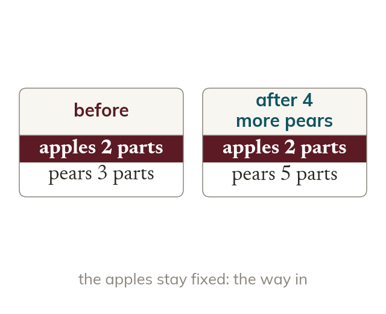

What stays fixed
Adding to one share changes the ratio. The other share often stays fixed. That fixed share is the way in.
When a quantity is added to or taken from one share the ratio changes, but the other share often stays fixed. That fixed share is the way in, since it must represent the same amount in both ratios.